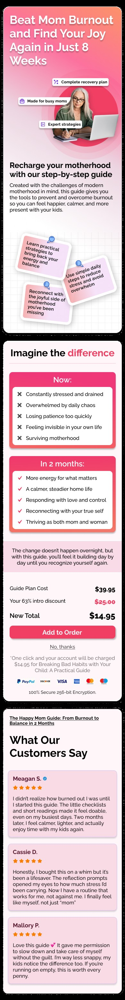
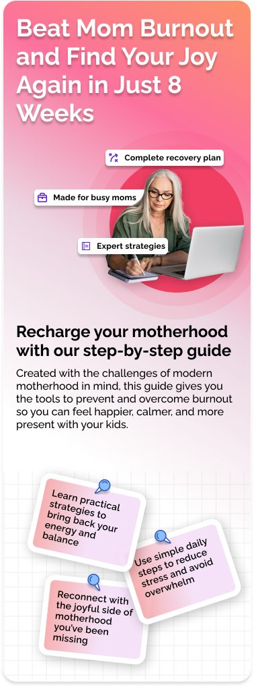
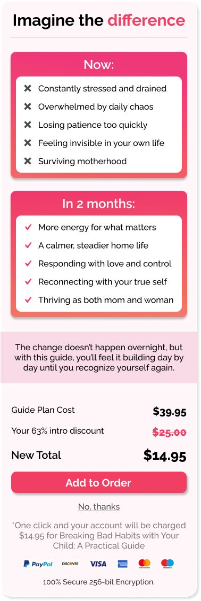
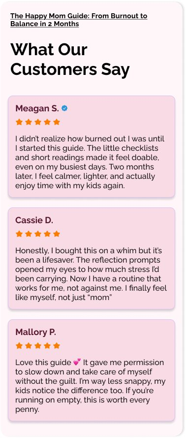
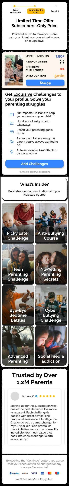
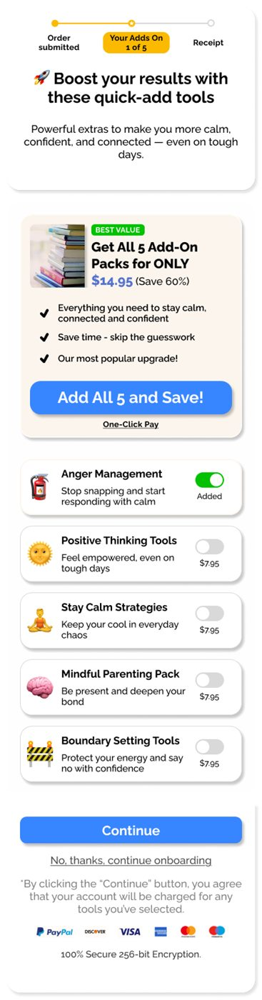
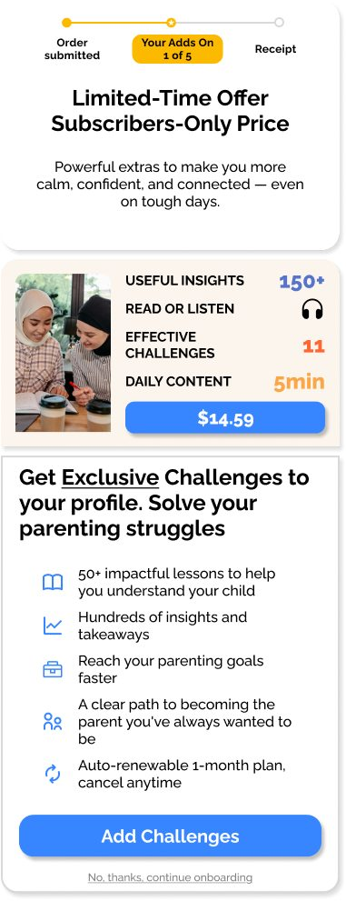
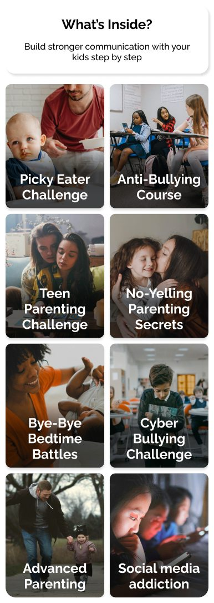
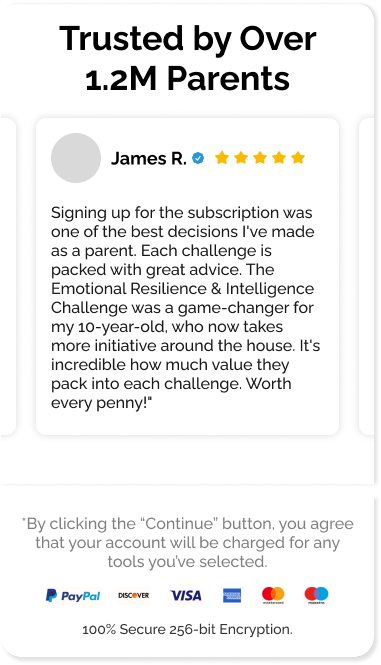
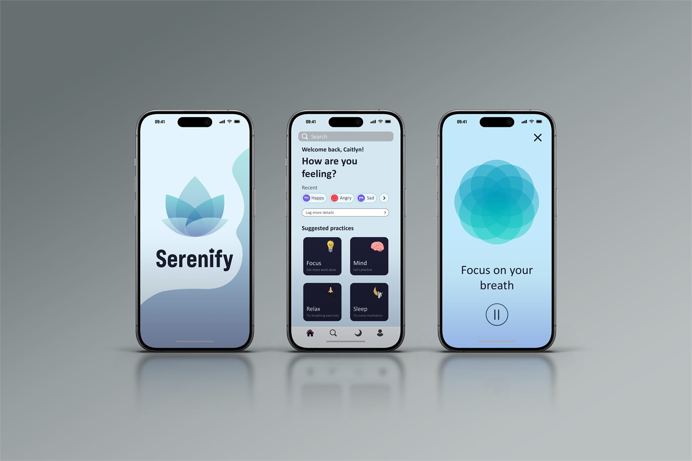

The same app designed twice. Two UI directions in Figma for a parenting support app covering stress management, emotional wellbeing, motherhood and child-focused activities — same product, same content, same screens. What changes is the visual language: one version follows a fixed set of rules I committed to before starting, the other is my own style with nothing to follow.
Mobile UX
Both directions cover the same ground — the promise, what you actually get, the proof that it works, and the point of payment — so the comparison is purely one of visual language. Option 1 is mine: warm, pink, and built the way I would build it. Option 2 was made to a fixed brief instead, a set of rules and a prescribed design path I held myself to from the first screen, to see what the same product becomes when the visual decisions are not mine to make.
My own direction, with nothing to follow. A warm, single-column page that leads on the promise, then earns it — the offer, the change it claims to make with its pricing, and the reviews that have to make that credible without reading as a sales tactic.

Full design

Landing screen

Plan and pricing

Reviews
The same page again, this time to a fixed brief: a set of rules and a prescribed design path I committed to before starting, as an exercise in designing inside constraints that were not my own. Cooler and more conventional by design — the restraint is the brief, not the taste.

Assembled page

Add-ons screen
The assembled page, section by section

Top — offer

Middle — course grid

Bottom — social proof
An earlier alternative idea for a similar app, drafted while testing how this kind of visual language holds up at mobile size — a lotus splash, a mood check-in and a breathing exercise.

Three screens